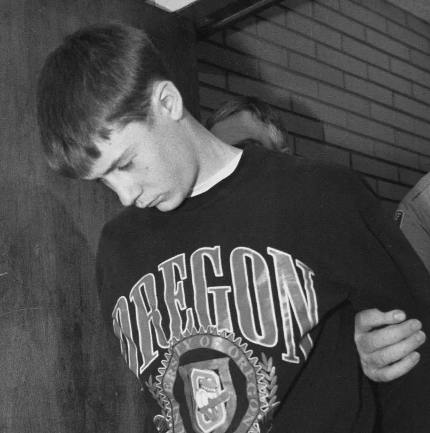
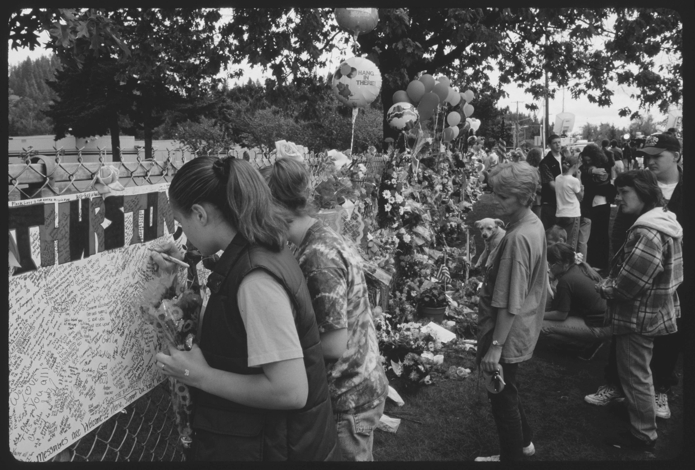

After the shootings, Kristin became an object of public curiosity. “I was not a human being to the media,” she said. Photograph by Magnus Holmes for The New Yorker
On May 21, 1998, before places like Columbine and Newtown and Parkland had become part of the American vernacular, Kristin Kinkel received a phone call. At the time, she was twenty-one and a student at Hawaii Pacific University, in Honolulu. She had a scholarship for competitive cheerleading—she was an expert tumbler and flyer—and she lived with some of her teammates in a modest rental house they called Cheer Palace.
The phone call came early that morning from a friend from her home town—Springfield, Oregon. He stammered something about having bad news and hung up. Soon afterward, another friend called and told her that there had been a shooting at Thurston High School, where Kristin had gone and where her brother, Kip, was in ninth grade. “Is Kip hurt?” she asked. She didn’t get an answer. Then a third friend phoned and blurted out what nobody else wanted to say: Kip was the one who had opened fire at Thurston. As Kristin would later learn, he had killed two students and injured another twenty-five.
Someone told her to check the news; the story was dominating CNN. “I remember turning on the TV and seeing my house, the house I grew up in, from a helicopter view, ” Kristin recalled recently. Her parents had built the house twenty-five years earlier—an A-frame surrounded by Douglas firs. Now it was a crime scene. After the shooting at Thurston, the police had discovered two bodies inside her family’s home—her brother had killed their parents, too.
The phone kept ringing. One of Kristin’s childhood friends in Oregon had heard an early news report that mistakenly said three bodies had been found in the family’s house—not two. The friend was terrified: Had Kristin been killed as well? “I ended up calling her roommates in Hawaii,” the friend remembered. “And they were, like, ‘She’s here. She’s fine. But she’s not talking to anyone.’ ”
Cheer Palace was in a quiet part of Honolulu, at the end of a street, but soon media vans were parked outside. To avoid being seen through the front windows, Kristin hid on the stairs in the back. “I remember sitting there on the top of the stairs, with my head in my hands, waiting,” she said. While her roommates tried to figure out what to do, her brain kept sputtering, trying to make sense of the news: “This can’t be true, there’s no way this is true, this is completely impossible.”
To help Kristin escape, a male teammate sneaked her into his truck and drove away. Unsure where she should go, Kristin tracked down a surfer friend. “Can you please take me out into the ocean?” she asked. She remembers lying on a board in the water, “just trying to come to terms with everything.” As the waves rocked her body, her mind was able to focus, and then she heard a siren in the distance. “There was something about that moment when it settled—I really did have to believe it, I can’t ignore it, I can’t pretend that this didn’t happen,” she said.
To help Kristin escape, a male teammate sneaked her into his truck and drove away. Unsure where she should go, Kristin tracked down a surfer friend. “Can you please take me out into the ocean?” she asked. She remembers lying on a board in the water, “just trying to come to terms with everything.” As the waves rocked her body, her mind was able to focus, and then she heard a siren in the distance. “There was something about that moment when it settled—I really did have to believe it, I can’t ignore it, I can’t pretend that this didn’t happen,” she said.
The police took Kip into custody at Thurston High School and the next day escorted him into a courtroom at the Lane County courthouse, in Eugene. He was fifteen, with reddish-brown hair and acne, and was wearing a University of Oregon sweatshirt. His wrists were cuffed in front of him, his ankles shackled, his head down. As he was led past the media, the snapping sound of camera shutters erupted. “Kip, what do you want to tell your sister?” someone shouted. He did not respond. In court, he was charged as an adult with four counts of aggravated murder.
Kristin’s university paid for her airplane ticket home, and a male teammate accompanied her, making certain that she wasn’t besieged by reporters. She could not return to her family’s house—the police were still there investigating—so she stayed with a friend’s family. Her parents had had a large circle of friends, and somebody had already called Don Loomis, an attorney who handled estates, suggesting that Kristin would need a lawyer. The night after she arrived, Loomis met with her.
She appeared to be in shock, which he had expected, but her words about her brother took him aback. “That’s not Kip,” she said. “There must be something wrong.” She insisted that they needed to figure out what was wrong with Kip—and find a way to help him. “I think she just knew that it wasn’t the Kip that she remembered,” Loomis said.
Kristin set about planning a funeral for her parents, which was held on May 27th. By then, seven days had elapsed since Kip had murdered them, and Kristin had already visited him at the local juvenile jail three times. “One of the first times I saw him, I just remember him being unable to talk,” she said. “He had his head down on the table, and he was crying, and the only thing he could say was ‘I’m sorry.’ ”
To read the media coverage of Kip Kinkel’s crimes today is to be reminded of how shocking they were at the time—and how numb we have become to such acts of violence in the past quarter century. Mass school shootings were almost unheard of before the 1997-98 school year. That year, there were a handful—including in West Paducah, Kentucky, and near Jonesboro, Arkansas—and then Kip’s shooting eclipsed them all: he had opened fire with a semi-automatic rifle in a packed cafeteria. “Something like this was unimaginable at that point in time,” Peter DeFazio, who lives near Thurston High School and represented the area in Congress, told me. “It was before this became an American epidemic.”
Springfield—a small, blue-collar city that had long been known for its timber industry—now found itself on front pages, its reputation redefined by the extreme violence of a teen-ager. The media had arrived en masse, with satellite trucks taking over the road in front of Thurston. Students and townspeople gathered at the fence in front of the school to grieve, leaving flowers, ribbons, notes, candles, and stuffed animals along the chain links. Today, the creation of a makeshift memorial in the wake of a school shooting might be expected, but then it was still a novelty, the beginning of a new American ritual.
An anti-violence campaign started in Springfield, with an optimistic slogan: “Let it end here.” On June 13th, President Bill Clinton visited Thurston, where he spoke in the school’s gym. “This has not only been a horrible and traumatic experience for you—this has been a traumatic experience for all of America,” he said. “Everybody who has looked at you knows that this is a good community that they’d be proud to live in, and, therefore, it could happen anywhere.” Ten months later, two teen-agers in Colorado launched an attack so deadly that it became known by a single word: Columbine.
After that, more mass shootings took place each year, and following the massacre at Sandy Hook Elementary School, in Newtown, Connecticut, in 2012, I started thinking about Kip Kinkel and his sister. Unlike the shooter at Sandy Hook or those in Columbine, Kip was still alive, and, I thought, he and Kristin might be able to provide some insight into the tragedy enveloping the country. After speaking to a couple of media outlets in 1998 and 1999, Kristin had refused every interview request, and when I reached out to her she turned mine down, too. I assumed that I would never hear from her again, but, this past April, ten years after I contacted her, she told me that she wanted to talk.
The first time I spoke to her, on the phone, it was apparent that she was still deeply traumatized. “Forgive the shakiness in my voice,” she said. She explained that part of her trepidation was owing to her past interactions with the press, which included reporters pursuing her at the courthouse. “I was not a human being to the media,” she said. “I was a story that everyone wanted to get.” I wondered if at some point she would change her mind about talking to me, but she never wavered, and we got into a routine of speaking each week.
Our first interview took place on May 8th—her mother’s birthday. Many years ago, Kristin told me, a therapist had helped her devise a ritual to cope with the loss of her parents: on their birthdays, she carries an object that reminds her of them. For her father, the object was a tennis ball, because tennis was his favorite sport. For her mother, who had long red hair, it was a silver butterfly hair clasp. At the moment, Kristin said, she was carrying the clasp in the “kangaroo pouch” of her sweatshirt. “I’m holding it right now,” she said.
I was surprised by her willingness to be so candid with a stranger. It seemed that part of her decision to speak with me had to do with timing—this year marks the twenty-fifth anniversary of her brother’s crimes. In the past, she had worried that anything she said publicly might bring more pain to the families of the students Kip had shot, but now that a quarter century had passed she hoped this was less likely. I also sensed that her decision to tell her story was driven in large part by a desire to help her brother. He remains in prison, but they are still in close contact. “The thing you heard a few minutes ago”—a beep on the phone line—“was him trying to call,” she said.
After the shootings, Kristin had made a point of not reading the media coverage, but the story was headline news across the country. Kip had shot their parents on May 20, 1998, then spent the night at the house. The next day, shortly before 8 a.m., he had walked toward Thurston High School wearing a trenchcoat and carrying a semi-automatic rifle and two pistols. He had started firing the rifle in a breezeway, opened the door to the cafeteria, and continued firing, pausing only when he ran out of ammunition. Jacob Ryker, a junior on the wrestling team who had been shot in the chest, tackled him, and several other boys joined in, pinning him to the cafeteria floor. A custodian later told police that he heard Kip shout, “Kill me!”
Kip had fired fifty-one rounds, shooting students in the head, neck, buttocks, thigh, hip. Mikael Nickolauson, seventeen, died at the school; sixteen-year-old Benjamin Walker died in a hospital. Among the students most critically injured was Tony Case, a pitcher on the varsity baseball team and a trombonist in the school’s jazz band. He had been in the cafeteria that morning handing out campaign stickers for a friend running for student-body president. When he realized what was happening, he dived under a table, but Kip shot him three times in the back and once in the leg.

Kip Kinkel, 15, being led to his arrangement in Eugene, Oregon (Don Ryan/Associated Press)
Life published a ten-page story about the shooting victims, which included a photograph of Tony in his hospital bed. One of the surgeons who operated on him was quoted as saying, “I thought he was going to die.” After two weeks in the hospital, Tony came home to bags of get-well cards from all over the country. A few had been addressed simply to “Tony Case, Springfield, Oregon.” Some were made of construction paper and signed by classrooms of children; others had been sent by youth baseball teams.
Kip Kinkel had opened fire at Thurston on a Thursday. The following Tuesday, the school reopened, with the cafeteria cleaned up. Tony, a junior, did not return until the following school year. “I can’t move my right foot and still can’t feel in my right foot and ankle,” he told a reporter three months after he was shot. “The doctors are just, like, ‘Wait and see.’ ” Tony said that he had not “felt any anger” toward Kip: “I think pretty much what everybody thinks—there’s a sick kid for you, and he pretty much needs to stay in jail for the rest of his life.”
“One of the first times I saw him, I just remember him being unable to talk,” she said. “He had his head down on the table, and he was crying, and the only thing he could say was ‘I’m sorry.’ ”
Kip’s lawyers had arranged for a psychologist to meet with him regularly at the juvenile jail. Two days after Kip’s arrest, the psychologist wrote in his notes, “No contact with Kristin. Uncertain and fearful about what she thinks of him.” Four days later, after Kristin had visited three times, the psychologist noted, “Kip’s spirits are improved.” Kristin had become his lifeline. Jail officials had placed Kip on suicide watch, in a cell with no sheets and only paper clothes. With no obvious way of ending his life, he had initially tried to starve himself. But he told the psychologist that once Kristin came to visit he “didn’t try to starve.” Then, when she returned to Honolulu briefly, he said, “I didn’t try for a while because I didn’t want her to have to fly right back again from Hawaii.”
Kristin graduated that summer from Hawaii Pacific University, and before long she had moved back into her family’s home, on a hill near the McKenzie River. Another daughter might have refused to live in the house where her parents had been killed, but Kristin felt herself drawn to it. “That house is what made me me. That’s the only place I wanted to run to,” she explained. “It was where I was most connected to my family.” For her, being in the house brought back happy memories: carving pumpkins on newspapers spread out over the kitchen floor; camping on the back deck in a My Little Pony tent; hiking through the nearby woods with her mother.
Her parents, Bill and Faith Kinkel, had been high-school language teachers known for their dedication to their jobs. Bill, who had retired from Thurston High School after teaching Spanish there for three decades, had been the sort of teacher who would climb on his desk and break into song in order to teach an especially difficult grammar lesson. Faith, who taught at Springfield High School, across town, often got up at 4 a.m. to write her lesson plans. She had died at fifty-seven; he was fifty-nine. When a memorial service was held for them at Springfield High School, more than a thousand people showed up.
In the months after her parents died, Kristin went through each day as if she were “on autopilot,” she later said. “Just kind of trying to survive and not stop.” There were practical issues that she’d never had to deal with before, like how to find a plumber when the toilet breaks. And there were other, more challenging tasks. “Somebody had to go through all the boxes and all the clothing and all the stuff that’s left behind,” she said. “And nobody else was going to do that.” Her days were full: she was visiting her brother, meeting with her lawyer, seeing her father’s mother in Eugene. Bill had visited her weekly, and Kristin was now her primary caretaker.
Kristin’s decision to avoid the media coverage of her brother’s crimes seemed driven by a desire to hold on to her sanity. Or, as she later put it, by a “protective mechanism inside me that says, ‘Nope. Don’t get close to it, because you might remember it, and you’re not supposed to remember it, because you have to stay alive, and you have to stay functioning.’ ” But Kristin learned from friends that the press was painting a picture of a profoundly troubled teen: a kid who had left homemade bombs in the crawl space beneath his house, who had been obsessed with guns and joked to classmates about opening fire at school, who had been named as the student most likely to start World War Three. The Seattle Post-Intelligencer called him “a bad kid from a good family.”
Kristin, who had left for college when Kip was eleven, found it impossible to reconcile these descriptions with the boy she remembered, who had slept in a bunk bed above her when he was little. Kip had doted on his calico cat, which he named Tiger Lily, after the character in “Peter Pan.” Kristin remembered him trading “deer kisses” with their mother, nuzzling his cheek against hers.
Kristin’s family had come to visit her in Hawaii when Kip was in middle school, and now she found herself studying a photograph that one of her parents had taken on the trip. In the picture, she grins at the camera, and Kip squints at it, unsmiling. “I remember looking back at that picture and saying, ‘You know, he was very strange on this trip. This is not the kid I remember,’ ” she said recently. His affect was “very flat,” and he seemed “disconnected from everyone.” Even so, his behavior did not seriously concern her. “It was different enough to be noticeable, but not so different that it couldn’t be chalked up to ‘Oh, he’s a moody teen that I don’t know that well anymore.’ ”
Kristin continued to visit Kip regularly in jail, but they did not speak about what, exactly, he had done, or why he had done it. She did not want to know the details of his crimes, and, even if she had, Kip’s defense attorneys had advised him not to talk about them with any visitor. Kip did, however, speak openly with a slew of strangers: the psychologist he saw weekly, and medical experts who had been retained by his attorneys to evaluate him.
The accounts that these experts produced are remarkably consistent: they depict a fifteen-year-old boy tormented by his own mind, overwhelmed by the symptoms of an illness he did not understand. “Kip came in and out of psychosis like you would turn on and off a light switch,” a psychologist later said. “His outward appearance was of the boy next door, who you would trust to babysit your children, feed your pets, and take care of your house. When he was lucid and intelligent, he was like any other adolescent. But, when you talked to him, within minutes he would have auditory hallucinations and go in and out of them depending on the topic.”
Kip explained that when he was twelve he’d begun hearing voices. The voices confused him: “Do other people have them? Will they go away? Is this because of puberty?” He said that the voices fired insults at him and sometimes ordered him to do violent things, causing him so much distress that, he told one psychiatrist, “I wanted to bash my head against the wall or stick my finger in my eye to make it stop.” As he grew older, he said, the voices became more frequent, and he found that stress exacerbated them. He did not tell anyone about the voices but instead devised strategies to try to quiet them, including putting on his Walkman, blasting Nine Inch Nails, and pedalling his mountain bike as fast as he could.
In middle school, Kip began getting into trouble. On a snowboarding trip, he and a friend left the motel where they were staying and were picked up by the police, accused of tossing rocks at cars from an overpass. At home, he made explosive devices with gasoline and other chemicals, and when he was angry he would set them off at a nearby quarry. In January of 1997, when he was in eighth grade, his mother took him to see a psychologist, Jeffrey L. Hicks, who had been referred by his school. “Mrs. Kinkel reported Kip has a fascination with explosives, guns and knives,” Hicks wrote in his notes. “This interest is shared by several of his friends and his mother is concerned such fascination is unhealthy and may lead to behaviors that could harm Kip or others.” Kip had a strained relationship with his father, and he “became tearful” when the topic came up, Hicks wrote. “He feels his father expects the worst from him.”
During the next six months, Kip’s mother brought him to see Hicks every two or three weeks. Hicks dissuaded Kip from playing with explosives, gave him a diagnosis of depression, and later suggested that he get a prescription for an antidepressant from his pediatrician. Kip started Prozac that June. Eight weeks later, Hicks wrote in his notes that he, Kip, and Kip’s mother agreed that Kip was “doing well enough” to discontinue regular sessions. Kip stopped seeing Hicks; after his prescription ran out, in the fall, he stopped taking Prozac.
Kip never told Hicks about the voices he heard. Several months after his arrest, when a psychologist asked him why he had stayed silent, Kip said, “I didn’t want anyone to think I was nuts, didn’t want to go to a mental hospital, didn’t want my friends to know, because that would end my friendships. I really didn’t want any girls to know, because they wouldn’t want to be seen with me.”
On April 24, 1998, while in his ninth-grade language-arts class, Kip blurted out, “God damn this voice inside my head!” For his outburst, Kip was punished: the teacher sent him into the hall, and he had to fill out a “respect sheet.” (The form asked: “In the future, what would you do differently to prevent this problem?” Kip’s answer: “Not to say ‘Damn.’ ”) He was supposed to get a parent’s signature on the form; instead, he got a girl in study hall to sign it.
On May 20th, Kip was caught with a pistol in his locker, which he had bought that day from a friend. (The friend had stolen it from the house of a classmate.) Kip and the friend were both taken to the police station, and Kip’s father had to pick him up. His father was irate, telling him that he would now be expelled from school and charged with a felony. Kip later said that in the car the voices in his head were so loud that he couldn’t remember what his father said to him.
Mental-health professionals refer to voices that order an individual to act in a certain way as “command hallucinations.” Kip told a psychologist that, when he and his father had returned home that day, he heard voices saying, “ ‘Get your gun. Shoot him. Shoot him.’ So I did. I had no choice.” After he shot his father, he said, the voices continued: “They told me to kill Mom because I’d already killed Dad. ‘No choice, do it!’ they said.” The next morning, Kip said, the voices told him, “Go to school and kill everybody.”
Kip’s attorneys hired an investigator to examine his family history, and she found evidence of severe mental illness on both sides. In 1948, Kip’s great-uncle Robert McKissick had made the front page of the Twin Falls Times-News for committing his own seemingly inexplicable act of violence. McKissick, a farmer, had been driving his truck when a trooper pulled him over for a traffic infraction. Afterward, as the trooper was walking away, McKissick got out of his truck and stabbed him five times with a knife. This attack had been prompted by a delusion: one of McKissick’s brothers had died in the war, and he believed that the trooper was the person who had killed him.
The mental-health experts who interviewed Kip discovered that he, too, suffered from delusions. Kip worried that the Disney Corporation was taking over the world and would replace U.S. dollars with “Disney dollars”; that China might invade any day and start stealing the trees around his house; and that the voices he heard were coming from a chip that had been implanted in his brain. A psychologist wrote that, after he informed Kip that an MRI of his brain did not show a chip, Kip “argued that the chip may not have been picked up because it may have moved to his spinal column.”
Kip had heard of schizophrenia, but he had never associated that illness with the voices he heard. In jail, the psychologist who met with him weekly told him that other people hear voices, too, and that medication exists to quiet them. Kip was “angry at himself that he didn’t tell his parents about his voices,” the psychologist wrote, near the end of 1998. Another day, Kip stated that, if he had told his mother about the voices, “maybe we could have gotten help and this whole thing would never have happened.”
Kip’s lawyers had originally planned to go to trial and mount an insanity defense. If they had succeeded, Kip would have been sent to the state’s psychiatric hospital. But, in the end, they decided not to take his case to trial. Kip’s crimes had shaken the entire county—everyone seemed to know someone connected to the case—and the lawyers were not optimistic about winning over a local jury. They struck a deal with prosecutors. Kip would plead guilty to the charges against him—four murder charges and some two dozen attempted-murder charges—and, in exchange, he would receive a prison sentence of twenty-five years for the murders. This plea deal was a gamble, because it did not include his sentence for the nonfatal shootings. The judge, Jack Mattison, would decide his punishment for those crimes
He heard voices saying, " ‘Get your gun. Shoot him. Shoot him.’ So I did. I had no choice.” After he shot his father, he said, the voices continued: “They told me to kill Mom because I’d already killed Dad. ‘No choice, do it!’ they said.” The next morning, Kip said, the voices told him, “Go to school and kill everybody.”
A sentencing hearing was held in November of 1999, at the Lane County courthouse, with some eighty people testifying. The survivors, their family members, and their supporters filled the courtroom. Kip sat at the front with his lawyers, sometimes laying his head on the table. On the second day, Kristin came to testify, accompanied by her aunt Claudia, who had been appointed Kip’s guardian. The next day, Kristin appeared on the front page of Eugene’s Register-Guard. She looked polished, in a thin sweater and a gray pants suit, though a reporter described her as “frail and weary.”
During the next six months, Kip’s mother brought him to see Hicks every two or three weeks. Hicks dissuaded Kip from playing with explosives, gave him a diagnosis of depression, and later suggested that he get a prescription for an antidepressant from his pediatrician. Kip started Prozac that June. Eight weeks later, Hicks wrote in his notes that he, Kip, and Kip’s mother agreed that Kip was “doing well enough” to discontinue regular sessions. Kip stopped seeing Hicks; after his prescription ran out, in the fall, he stopped taking Prozac.
She did not want to be there—to sit in the courtroom, surrounded by her brother’s victims, was “excruciating,” she later said. But she was determined to do all she could to persuade Judge Mattison not to give Kip a life sentence. On the stand, she told the judge about their childhood together: travelling to national parks, playing basketball in their driveway, arguing over which of them the family dog loved best. “I wish I had paid more attention,” she said. She read aloud from a letter she had written the judge: “I love my brother more than I ever thought possible. And not because he needs me to, but because I need to. It is a difficult concept for an outsider to understand, but it comes from what is inside us.”
Kip’s attorneys called William H. Sack, a highly regarded psychiatrist who had evaluated Kip. He gave his diagnosis—paranoid schizophrenia—which, he said, responds “better to treatment” and has “a better prognosis in general than the other forms of schizophrenia.” The plan was to send Kip to MacLaren Youth Correctional Facility, a juvenile prison with a strong mental-health program, where Sack worked. “If Mr. Kinkel takes medication, is consistently cared for by a psychiatrist he trusts, in twenty-five or thirty years I think he can be safely returned to the community,” Sack said.

Students comfort each other at a candlelight vigil in memory of the victims of the May 1998 shooting at Thurston Highschool in Springfield, Oregon. (David Butow/ Corbis via Getty Images)
When Kip got his chance to speak, he apologized. “I absolutely loved my parents and had no reason to kill them. I had no reason to dislike, kill, or try to kill anyone at Thurston,” he said. “I am very sorry for everything I have done.” But rage at Kip seemed to unite the courtroom audience. When the survivors and their parents testified, they spoke not only about injuries but also about plunging grades, fears of loud noises, difficulties sleeping, and a sense of terror at the prospect of Kip getting out.
“You made the rest of my high-school life absolute hell. I became someone other kids avoided because I reminded them of you and the shooting,” Jennifer Alldredge, who had been shot in the back and the hand, said. “My name became ‘victim.’ ”
“I don’t care if you’re sick, if you’re insane, if you’re crazy,” Jacob Ryker, the wrestler who tackled Kip despite having been shot in the chest and then in the hand, said. “A lifetime in prison is too good for you.”
One of the last to speak was Tony Case, the former varsity baseball player, who had been shot four times and critically injured. Tony was now enrolled at Lane Community College, in Eugene. Reading aloud from a statement he had written, he described how a bullet had severed an artery in his leg, making it excruciatingly painful for him to walk without shoes. “Because I will be affected for the rest of my life, I feel that he should be, too,” he said.
Judge Mattison sentenced Kip to nearly eighty-seven years in prison for his nonfatal shootings. This, combined with the previous sentence, brought Kip’s total punishment to “111.67 years, which is more than anyone will ever serve,” Mattison said. There would be no possibility of parole.
After the sentencing, Kristin and her aunt Claudia dodged reporters and hustled across the street, to the office of Kristin’s lawyer. A family friend, Judy, was there, waiting to hear the news. Judy recalled that she saw only Claudia come in: “I said, ‘Where’s Kristin?’ And Claudia said, ‘She’s in the bathroom vomiting. She’s so upset.’ ” Judy ran in, opened the stall door, and held her. “And I remember Kristin saying, ‘He’s going to kill himself!’ ”
Judy tried to assure Kristin that that would not happen. “As soon as you see Kip, you need to say you cannot lose another member of your family,” Judy told her. “He needs to be here for you.”
Kristin moved to the Portland area and took on two jobs: as a bilingual teacher’s assistant and as a member of the Portland Trail Blazers’ stunt team. Once or twice a week, she made the thirty-minute drive to visit her brother at MacLaren, in Woodburn, Oregon. He was now on an antipsychotic, but the doctors were still figuring out the right dosage, and sometimes when she visited he would fall asleep. “He needed guidance, he needed taking care of, he needed advice, he needed a lot of parenting,” she recalled. For his eighteenth birthday, she brought him a cake decorated with his favorite candy: gummy bears. When he graduated from high school, she went to MacLaren for the ceremony, and she was there when he graduated from college, too. (He got a B.A. from the University of Illinois via correspondence courses.)
Sack, the psychiatrist who testified at the sentencing hearing, treated Kip weekly at MacLaren. “He was absolutely normal once the medication took the voices away,” Sack told me. “During all that time, you couldn’t find a nicer kid.” A psychologist who treated Kip at MacLaren wrote in a memo, “He is a very bright, witty, kind man who other youth look up to.”
In 2007, when Kip was about to turn twenty-five, he was transferred into the adult prison system, and ever since he has been confined at the Oregon State Correctional Institution, a medium-security prison in Salem. The siblings’ relationship has changed significantly over the years. After Kip entered the state prison, “there was a kind of transition period where I would notice myself saying to people, ‘You know, he just doesn’t need me in that way anymore,’ ” Kristin said. “And so the relationship shifted from big sister–little brother to just siblings—much more equal, learning from each other.”
Kristin married at the age of twenty-six, divorced at thirty-six, and now, at forty-six, is a single mother with two children. When a wildfire broke out near Kip’s prison, in the fall of 2020, she was terrified that something might happen to him, and she asked him to call her every day. The habit continued, and today she describes her brother as her “best friend.” She told me that sometimes after she goes to see him she feels even better than when she walks out of her therapist’s office. “He just has this insight and wisdom,” she said. “And he knows me so well. He knows how to comfort me.”
She has tried hard over the years to forge an existence outside her identity as Kip Kinkel’s sister, but being related to Kip has complicated her life in ways she could not have imagined. She told me that the topic of Kip had come up with two men she’d dated in recent years. One figured out who her brother was after reading something online. “He freaked out,” she said. With the other, she tried to bring up the subject—“I have to tell you something”—but he interrupted her. “He just said, ‘I know,’ and he hugged me,” she recalled. That relationship, however, did not last.
This past summer, Kristin invited me to tag along on one of her visits to see Kip. This was also the first time Kristin and I met in person. Early on a Tuesday morning, she picked me up outside my hotel in Salem. She wore sunglasses atop her head and her usual prison-visit attire: stretchy Athleta clothing that would not be uncomfortable to sit in. That day, she had on a white sleeveless top and cropped black pants, plus a thin black suède jacket.
Kristin comes across as warm and energetic, exuding a sense of total competence. At 8:02 a.m.—two minutes after visitors are allowed to arrive—she steered onto the long driveway leading up to the prison. “We sit here and wait,” she explained, as she pulled into a parking spot near the back. When it was our turn to enter, she strode quickly along the path to the visiting room. We waited another twenty minutes for Kip to arrive, and when she spied him she stood up. Before he was close, she had her arms in the air, ready to give him a hug.
The siblings look alike, with the same narrow face, though Kip is considerably taller and now mostly bald. He wore the prison’s uniform: a navy T-shirt and faded jeans, with “inmate” stamped on one thigh. We sat down at a table together, and I asked Kip what his life would have been like if his sister had not stood by him. He answered without hesitating. “I probably wouldn’t be here,” he said. “If I didn’t have her love and support, I probably would have ended things a long time ago.”
Kip is now forty-one. Despite having schizophrenia, he has survived a quarter century of incarceration. He has also surpassed many people’s expectations of what he would be able to achieve. He lives on the “honor unit”; goes to his job as a prison electrician at 7 a.m. each day; meditates, reads, and does yoga in his cell; and takes classes through a University of Oregon program that sends professors into the prison. It took many years of intense treatment at MacLaren for him to learn how to manage his illness and achieve the level of stability he now has. Every evening, he stands in the prison’s “med line,” waiting to be handed a plastic cup with his antipsychotic.
Before I could ask Kip about his crimes, he brought them up. It seemed that he had been trying for the past twenty-five years to answer one question: Why, exactly, did he do it? Or, as he put it, “How could I have gotten to this point at fifteen that all these things came together—where my humanity collapsed, and I did this horrific thing to people I loved and to people I didn’t know?”
He mentioned not only his mental illness but also “cultural factors.” Hunting was a popular pastime in Springfield, and guns were part of life in the town, he explained. “It was common in October—deer-hunting season—that seniors would drive to school with their hunting rifles in the back of their truck, just like someone else would pack a cooler for a camping trip. It was very normal.” Kip’s father was not a hunter, but, Kip said, he had owned three guns: a hunting rifle, a pistol he had bought for protection in the sixties or seventies, and a .22 single-shot rifle he had received as a gift when he turned twelve.
“If you would have asked me ten minutes ago if we had any guns in the house, I would have said no,” Kristin said. She had never been interested in guns or hunting. She added, “Mom was very, very anti-violence. I remember she wouldn’t let you play with G.I. Joes. She wouldn’t let us watch Bugs Bunny—it was too violent.”
Kip did not disagree, but, he said, “Dad did take me out when I was pretty young and taught me how to shoot.” He added, “Our parents were wonderful people, but I think we had different experiences in part because of gender.”
On Kip’s twelfth birthday, his father handed down to him the .22 single-shot rifle. This was the year that Kip began to hear voices. The voices were intermittent in the beginning, he said, and he was preoccupied with other things: “I was thinking about girls, how to get on the basketball team, playing football.” As he got older, however, the voices became more frequent, and he developed “really bizarre beliefs,” as he put it, mentioning his delusion that China was about to invade. “When I started slipping into my mental illness, there were threats everywhere,” he recalled. “There was an overwhelming sense of fear, tremendous fear, and the solution to that was, when I would get a gun, I’d feel safe for a little while.”
Kristin interjected, “This is not what I was expecting today to be.” I later learned that Kip had never given her a full account of the months leading up to his crimes. (He explained, “I don’t think she ever wanted to know the details.”)
Now, however, Kristin brought up Hicks, the psychologist whom Kip had gone to see in eighth grade. “How frequently did you see him?” she asked.
Kip recalled that he saw Hicks nine times in the course of six months, beginning in January of 1997. That spring, Kip said, he became fixated on persuading his father to buy him a gun. He saved up the money for it by taking care of their neighbors’ pets, and, that June, he and his father went to a firearms dealer and got a Glock 19. The agreement was that Kip could use it only with his father’s supervision.
Kip said that, every month or so, he and his father would take out the Glock and “go up in the logging woods and shoot his beer cans.” He added, “Those were good days. We spent time together.”
Kip had to earn the money to pay for ammunition, however, and soon he lobbied his father for a gun that would be less costly to use. In September of 1997, his father bought him a Ruger 10/22—a semi-automatic rifle—at Bi-Mart, a discount chain store down the street from Thurston High School. Kip said that he and his father used the new gun “the same way we used the Glock”—for target shooting in the woods near their home.
Kristin stared at the table, looking physically ill. “A lot of this I didn’t know,” she said.
Kip told his sister that their mother had been opposed to the gun purchases, but that Hicks had “given her emotional permission to say yes.” He went on, “Hicks explained to her that this could be a meaningful way for me and my dad to spend time together.” (Hicks testified at Kip’s sentencing hearing that he had not been consulted about the decision to buy a gun, but a psychiatrist retained by Kip’s defense team, who spoke with Hicks, wrote in a report, “Dr. Hicks revealed that he did approve of Kip’s sharing his interest in guns with his father.”)
Kip, however, ended up using the Ruger 10/22 to attack his fellow-students. Today, he sounds like his mother: “There’s no reason for a civilian to own these types of weapons.”
When visiting hours ended, Kristin hugged Kip and left. As we stepped out of the prison, she seemed to be reeling from everything her brother had said. For a while, she was quiet, but as we walked back toward the parking lot she exhaled loudly. “I cannot believe what different childhoods we had,” she said.
Peter DeFazio, a Democrat who represented Springfield and the surrounding area in Congress for thirty-six years, still remembers the moment he heard about the shooting. He had just left the House floor and walked into his office, where he found his chief of staff, stunned, watching the aftermath on TV. DeFazio flew home, took a bouquet of flowers to the fence at Thurston, visited with victims, and spoke at a candlelight vigil. Over the years, Kip’s attorneys have tried to get his punishment reconsidered. “There is a lot of uproar over that,” DeFazio said. “There is still a long memory and a lot of victims. I mean, that guy should never see the light of day.”
Kip’s best chance to be released came two years ago, when Kate Brown, Oregon’s governor at the time, granted clemency to seventy-three people who had been given lengthy sentences as juveniles, making them eligible for parole. But Kip did not make the list. His current lawyer, Thaddeus Betz, of the Oregon Justice Resource Center, is fighting to get him a parole hearing, but in the meantime Kip has said goodbye to many friends—other “juvenile offenders” he has known for years who were set free.
“He describes it as ‘There were a whole bunch of us on the island, and this big lifeboat came and picked up everybody except for me,’ ” Kristin told me at lunch one day. “I keep telling him, ‘It’s going to make multiple trips—it’s not one opportunity. We are going to fight our entire lives to be able to make sure that you are in the place where you need to be.’ ” When I asked her where she thought Kip needed to be, she said, “At home.”
During another conversation, I asked Kristin if there was a moment when she had forgiven Kip for what he had done. “I’ve never reached a moment where I was just mad at him and needed to forgive him,” she said. “There’s no way his behavior was a choice.” She had expressed rage to me, focussed not on her brother but on the fact that he never received the mental-health care he needed. After her parents died, Kip was her only close family member, and her need to hold on to their relationship seemed to have shaped the way she thought about what had occurred. “We had just lost our parents,” she said, then paused. “It always felt that way for me—it’s kind of like ‘We lost our parents’ instead of ‘He took them away.’ ”
One evening, as Kristin drove along I-5, I paged through family albums she had brought to show me. There were photographs of the family posing with their bicycles, of Kip dressed as a Seattle Seahawk, of the family on vacation in Northern California, driving their Volkswagen van through a redwood tree. “We were kind of an average family,” Kristin said. But in the way the media had covered them she had noticed a pattern: “There’s this tremendous need to be able to put us in a box with a label that’s different than the one you put on your family. Because if we’re similar that means this could have been you, too. And I think that thought makes people very uncomfortable.”
Over two days, Kristin and I spent about ten hours with Kip in the prison’s visiting room. On our last visit, they talked mostly about Kristin’s two children.
“I feel a sense of gratitude to you in a number of different ways,” Kip told her. “But a major way is, you have tried from Day One to make your kids part of my life.”
When Kip calls Kristin in the evening, she puts him on speakerphone so that the two of them and her children can take turns talking about their days. When one of the children was begging to get TikTok, she asked her brother to help: he sent a letter explaining why it was not a great idea. When either child has a birthday, Kristin buys an extra present and says it’s from Uncle Kip.
She had brought her first child to meet him at four months old. Kip said he had noticed a change in her on that visit. “You had an intense sadness generally for years and years and years,” he said. “And then there was a glow.” Having a child “provided a level of joy and happiness you didn’t have before.”
Kristin said that sometimes she tells her older child, “You saved my life.”
In a few weeks, she planned to bring both children to see Kip, and now she and Kip strategized about what they might do to make the visit fun. Would the older child still enjoy the small playroom next to the visiting room? Perhaps not, Kip said, but “we can do a board game.”
“Maybe we can be teams. I’m looking forward to it,” Kristin added.
At the end of the visit, she said, “I hate seeing you in prison. Hate it, hate it, hate it.” She stood up to leave, and Kip rose and walked around the table toward her. As he leaned down to give her a hug, he told her, “I love you so much.”
Today, a memorial marking the shootings at Thurston stands next to the school. It includes a curved wall inspired by the “Thurston fence” and a plaque that names the two students who were killed. On the day I stopped by, the memorial was well kept, surrounded by freshly mowed grass. When the memorial was still in the planning stages—it was finished five years after the shootings—there was a debate about whether it should mention the other two people killed by Kip Kinkel: his parents. In the end, they were not included.
Twenty-five years ago, Kristin’s friend Jared Taylor made the first call to her after the shooting. (He was the one who stammered and hung up.) Today, he is the dean of students at Thurston. He told me that occasionally he will notice two adults he does not recognize standing at the memorial. He’ll walk over—“You guys all good?”—and ask them where they are from. Often he discovers that one of them was at Thurston at the time of the shooting and has since moved away. “I just came back to show my spouse,” the former student will say.
Many Thurston alumni have stayed in Springfield, and today a sizable number of the school’s students have parents with a direct connection to the shooting—they or a sibling was a student at Thurston at the time. “You could mention Kip Kinkel in the hall, and eight out of ten kids know exactly what you’re talking about,” Jared told me. “That was our community’s 9/11.”
Tony Case, the baseball player who was shot four times by Kip, is now forty-three years old and lives with his longtime girlfriend and their young son in a suburb of Boston. Not long ago, I met up with him at a restaurant inside a repurposed wool mill in Hudson, Massachusetts. At first glance, Tony looked like any other customer: black-rimmed glasses, shirtsleeves rolled up to his elbows, black Pumas.
He ordered a cappuccino and a prosciutto sandwich, ate quickly, pushed his plate to the side, and spoke to me for more than four hours. He still has limited mobility in his ankle, but he said that he can hike, cycle, and run. He pulled up the right leg of his jeans to show scars on both sides of his calf. He has others, too, on his thigh and his knee. When he left the hospital, he still had two bullets inside him, and now he pressed his right hand to just below his rib cage. “You could feel the outline, and they just left them in for, like, six months,” he told me. After the bullets were removed, he brought them home. Today, they are in a crate in his basement, along with his high-school baseball trophies.
When I asked Tony what he remembered about Kip Kinkel’s sentencing hearing, he said, “Not much, to be honest.” I shared a copy of his testimony. He read it quickly, then looked up. “Seems like something I would write,” he said, noting that his statement had been mostly factual. His parents’ testimonies had been more emotional. “Now that I’m a parent, I cannot even fathom what it was like for them,” he said. “I can’t even imagine my son falling on the playground and breaking an arm.”
As a junior in high school, Tony had imagined that he might play baseball in college, but he dropped that idea after he was shot. After community college, he earned a B.S. in physics from the University of Oregon, and then got a Ph.D. in astronomy from Boston University. Until recently, he worked at the Harvard-Smithsonian Center for Astrophysics. In his field, he is best known for his contributions to the Parker Solar Probe, a spacecraft, launched five years ago, that travelled closer to the sun than any other.
He became animated as he described his role: he had been the instrument scientist in charge of the solar probe cup, a device on the spacecraft that measures solar wind. If his injuries from the shooting had not led him to give up his baseball ambitions, would he “have studied physics and ended up working on all the cool stuff that I’ve worked on?” he asked. He doubted it. “If I had been pushing more toward baseball, there’s no way I could have been studying as much,” he said.
I asked Tony what he thought about Kip Kinkel now. He mentioned that he had set up a Google alert on Kip’s name a few years ago, and it was evident that he had been following Kip’s efforts to get his punishment reassessed. “That one can be driven by mental illness to do something like that, to me at the time—and maybe still, to some extent—sort of seems like a lame excuse,” he said. “You know, can’t we just call him a bad person and a criminal and a murderer, and not worry about whether it was a mental illness?
“But I think just over the years I’ve sort of moved away from that hard stance and more toward, you know, mental illness is a real thing that we need to be seriously treating,” he said. “It’s hard to look back and place the full blame on him, to be honest.” Had Kip received better mental-health care, he added, “I’d like to think that may have resulted in a different outcome.”
When Kip first started appearing in his Google alerts, Tony was taken aback by the more recent photos of him. In his mind, Kip was still a teen-ager. “With criminals, there’s the mug shot—and then there’s nothing, right?” he said. “And think about him,” he added. “It’s literally been more time since the shooting than time he was alive before the shooting. It’s more than half a lifetime ago for him, just like it is for me.”
It was apparent that the news stories he’d seen had prompted him to reconsider how he felt about Kip’s fate. “If I had to choose,” he said, “if the judge of the courts of Lane County came to me and said, ‘Look, all of the survivors voted, and it’s tied. You get to cast the deciding vote whether we give him parole or not’—that would be a tough choice for me.” He sounded uncertain about how he might vote. But, he added, “I would not be a hard no.” ♦